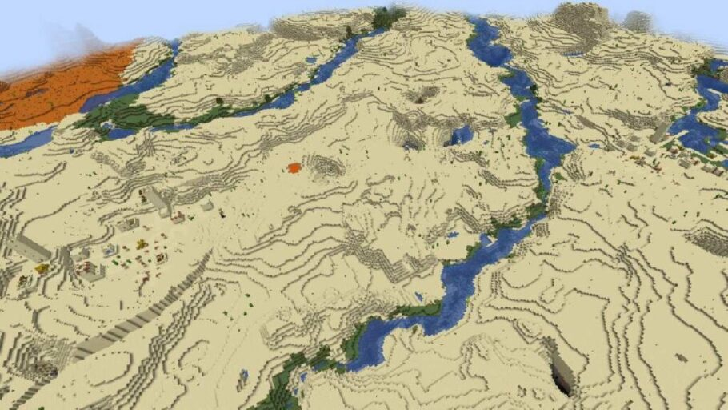
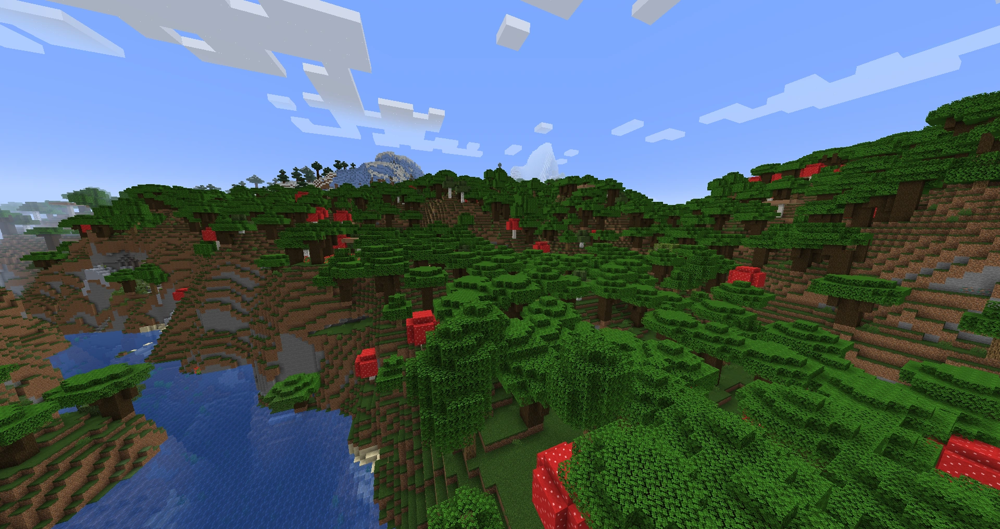
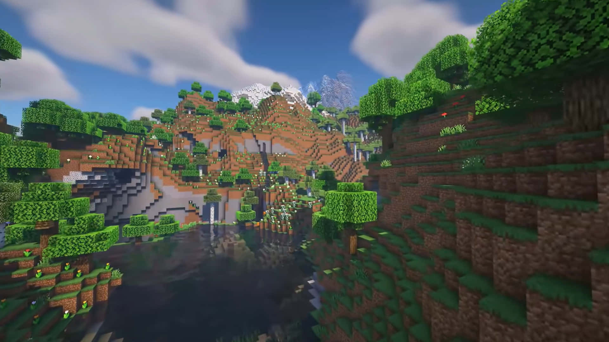
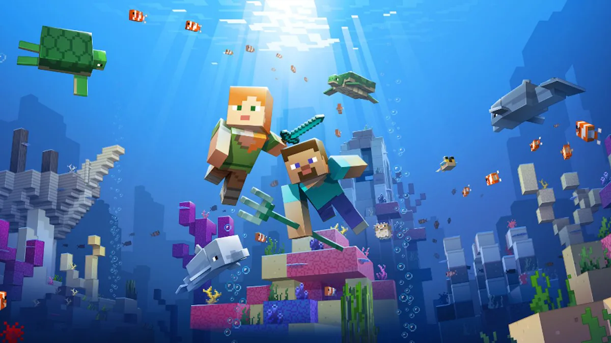

Exploração de Mapas e Biomas
O mundo do Minecraft é composto por diversos biomas únicos, cada um com suas próprias características, recursos e desafios. Explorar esses ambientes é fundamental para coletar recursos específicos e descobrir estruturas raras.
Biomas Principais do Overworld
Planície (Plains)
O Bioma da Planície é um dos mais comuns e ideais para começar. É plano, rico em grama e flores. É o local perfeito para construir sua primeira casa e iniciar uma fazenda. Quase todos os mobs pacíficos podem ser encontrados aqui.
Características Principais:
- Terreno plano ideal para construção
- Abundância de grama e flores
- Presença de aldeias e cavalos
- Recursos: madeira de carvalho, trigo, flores
PLANÍCIE

Taiga (Taiga)
A Taiga é fria e coberta por grandes árvores de pinheiro (Spruce). É uma ótima fonte de madeira escura e abriga os Lobos que podem ser domados com ossos. Cuidado com o terreno acidentado ao minerar.
Características Principais:
- Florestas densas de pinheiros
- Presença de lobos domesticáveis
- Pode conter aldeias de taiga
- Recursos: madeira de pinheiro, bagas doces, samambaias
TAIGA

Deserto (Desert)
O Deserto é marcado por areia, cactos e pouca vida vegetal. Mobs hostis podem aparecer à luz do dia nas áreas sombreadas. É onde você pode encontrar os valiosos Templos do Deserto repletos de tesouros!
Características Principais:
- Vastas extensões de areia
- Presença de cactos e arbustos mortos
- Templos do deserto com tesouros
- Recursos: cactos, areia, arenito, ouro
DESERTO

Floresta (Forest)
As florestas são biomas densamente arborizados com uma grande variedade de árvores. Excelente fonte de madeira, mas cuidado com a baixa visibilidade que pode esconder mobs hostis. Existem variações como Floresta de Bétula e Floresta de Flores.
Características Principais:
- Alta densidade de árvores
- Grande variedade de madeiras
- Abundância de flores e cogumelos
- Recursos: madeira de carvalho/bétula, maçãs, flores
FLORESTA

Montanha (Mountains)
As montanhas oferecem terrenos extremamente acidentados com grandes elevações. São excelentes para mineração em altas altitudes, mas apresentam desafios de navegação. Podem conter emas de esmeralda e estruturas únicas.
Características Principais:
- Terreno extremamente acidentado
- Neve no topo das montanhas altas
- Geração de esmeraldas
- Recursos: pedra, carvão, ferro, esmeraldas
MONTANHA

Pântano (Swamp)
Os pântanos são biomas úmidos com água de cor esverdeada, árvores cobertas de videiras e lótus. São o lar das Bruxas e das tão procuradas Cabana das Bruxas. Excelente local para encontrar sapos e coletar argila.
Características Principais:
- Água de cor esverdeada
- Presença de cabanas de bruxas
- Árvores cobertas por videiras
- Recursos: argila, lírios, cana-de-açúcar, sementes de lótus
PÂNTANO

Oceano (Ocean)
Os oceanos são vastas extensões de água que separam os continentes. Podem conter monumentos oceânicos, naufrágios e recifes de coral. Requerem preparação especial para exploração, como poções de respiração aquática.
Características Principais:
- Vastas extensões de água
- Monumentos oceânicos com guardiões
- Recifes de coral coloridos
- Recursos: prismarinho, esponjas, corais, tesouros submersos
OCEANO

Comparação Entre Biomas
| Bioma | Recursos Exclusivos | Estruturas | Dificuldade |
|---|---|---|---|
| Planície | Cavalos, aldeias, flores | Aldeias, poços | Fácil |
| Taiga | Lobos, bagas doces, pinheiros | Aldeias de taiga, cabanas | Médio |
| Deserto | Cactos, templos, poços | Templos do deserto | Médio |
| Floresta | Madeiras variadas, flores | Mansões da floresta | Fácil |
| Montanha | Esmeraldas, cabras | Estruturas raras | Difícil |
| Pântano | Argila, lírios, sapos | Cabana das bruxas | Médio |
| Oceano | Prismarinho, corais, tesouros | Monumentos, naufrágios | Difícil |
Mapa do Mundo Minecraft

O mundo do Minecraft é virtualmente infinito, com biomas gerados proceduralmente. Cada mundo é único, oferecendo experiências diferentes a cada nova aventura!
Dicas de Exploração
Preparação para Exploração
- Leve suprimentos adequados para cada bioma
- Marque seu caminho com tochas ou blocos
- Construa abrigos temporários durante a noite
- Use mapas ou coordenadas para não se perder
- Prepare equipamentos específicos (botas para neve, etc.)
Recursos por Bioma
- Planícies: melhores para construção inicial
- Florestas: melhor fonte de madeira
- Montanhas: mineração de alto nível
- Oceanos: tesouros e recursos aquáticos
- Pântanos: poções e materiais únicos